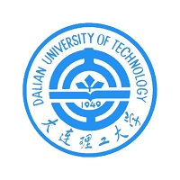
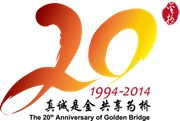
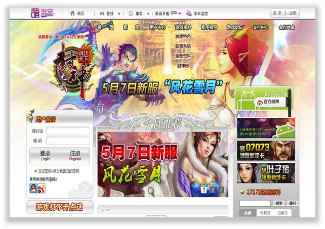
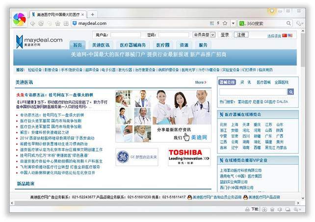
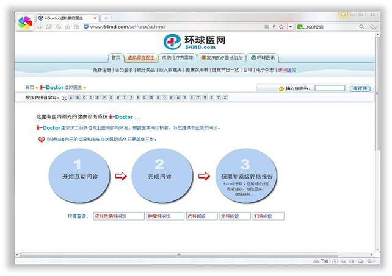
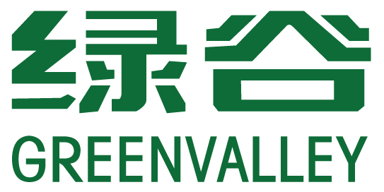
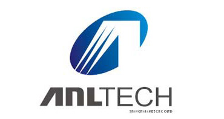

吴锦晟 (Tommy wu)
现任职于上海金桥信息股份有限公司 技术中心
80后屌丝 一线码农 Rock&Rap 业余斯诺克球手
hard worker Race
最近
-
金桥多媒体融合信息云共享平台
基于云架构的多媒体信息交互平台，用于解决客户利用视频会议等其他手段所不能解决的多地点多形式多内容的交互式共享问题。在系统架构上采用了SaaS,PaaS,IaaS三个层次的服务理念，能在各种硬件系统和平台上提供基于软件应用层的各类信息源共享、多媒体元数据描述集中存放、统一检索。已广泛应用与会商系统、研判系统、辅助决策、对抗演习、协作教学等应用需求中。
-
获得软件工程硕士学位
 2009.9 ～ 2012.6 于大连理工大学研究生院在职攻读 软件工程 学位
-
机票商城-97Ticket.com
注重WEB2.0和客户自助，针对背包客及对机票价格敏感并有自主需求的年轻群体。利用技术手段取代传统电话中心服务的模式，帮助客户摒弃底层细节。
-
加入金桥信息
 2009年2月加入上海金桥信息股份有限公司。与公司共同经历改制、上市，业务发展的急速扩张。个人也完成纯技术向技术管理的成长。
-
加入我友网
负责SNS社区服务端业务系统开发。
-
页游-封神无敌
 客户端使用Adobe AS3实现超炫2.5D的画面效果，服务端基于SFS构建，使用Terracotta集群框架和Red5流媒体分发框架。具有良好的扩容性，实现百万级玩家在线游戏。在其中负责服务端业务系统设计，开发包括Lobby系统，装备系统，战斗系统，商城系统。
-
加入浪潮国际
2007年年中，加入浪潮集团浪潮国际海外事业部，供职于微软美国总部Office 14 Team，任软件工程师。Redmond本是大多数程序员心中的梦。当然目标只有一个–朝圣。
-
美迪医疗网-maydeal.com|环球医网-54md.com
 一群小伙伴聚在一起，为一个目标：致力用互联网思维解决医患矛盾。造就了全国排名第一的医疗机械门户网站。 后来PLC带来了资金，小伙伴们放弃了管理权。最终梦想敌不过现实，但是曾经谁没有为梦想冲动过一回呢？
-
加入绿谷集团
 2006年2月加入绿谷集团。任职于集团信息技术与战略部，负责集团“两网两库一体系”的信息战略规划与系统实施。
-
加入安凌科技
 2005年7月毕业于上海第二工业大学，并于同年4月进入安凌科技实习。在技术研发部任软件工程师。负责OnlyCRM的研发工作，包括但不限于会员积分系统、客户行为模型算法、报表系统。
...